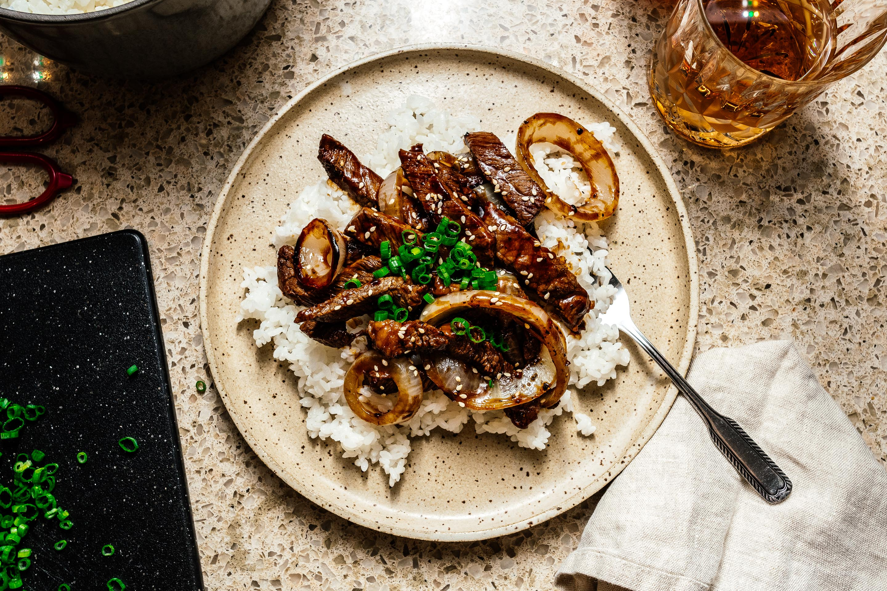

Small Batch Single Serving Giant Cookies

INGREDIENTS
- 2 tbsp soy sauce see note
- 2 tbsp fresh lemon juice or rice vinegar
- 2 tbsp sugar
- 1 lb flank steak sliced
- 2 inches ginger peeled and sliced
- 1 small onion peeled and sliced
- 2 tsp cornstarch
INSTRUCTION
- In a bowl, make a marinade by whisking together the soy sauce, lemon juice and sugar. Add the beef to the marinade and let stand while you cook the onions.
- In a nonstick frying pan, heat up a bit of oil over high heat until hot and shimmery. Add the ginger and onion and cook, turning down the heat and stirring as needed, until soft.
- Push the onions and ginger to the side. Turn the heat up and add the beef, reserving the marinade, in a single layer if possible. Cook, undisturbed, until browned. Flip and cook until the other side is browned.
- Make a sauce by mixing the cornstarch and 1/3 cup water into the remaining marinade.
- Add the sauce and cook until the beef is tender and the sauce bubbles, thickens, and becomes glossy. Season with a generous amount black pepper and enjoy.
GO TO RECIPEES